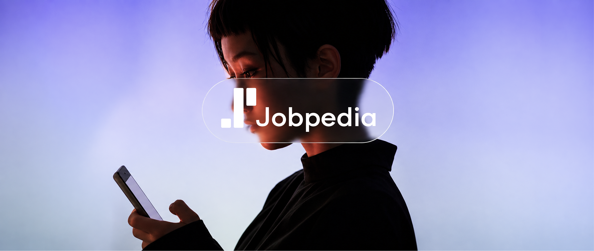
Building an AI-Driven Brand Identity
A New Identity for an AI-Powered Platform
Jobpedia is an AI-powered job-hunting platform built to help people discover, compare and track career opportunities.
As the product evolved, I developed a new brand direction that reflected its position in the AI market and the client’s vision of a distinctly digital identity.
The visual system connects that direction across the website, brand guidelines and physical communication.
From Research to Brand Direction
The branding was informed by product and market research Stefan Cosmin and I conducted for Jobpedia.
Examining competitors, customer segments and unmet needs helped clarify where the product could stand out. These insights became the foundation for its visual direction.
Audience expectations, market opportunities and product differentiation informed the direction.
We used the Kano Model to explore feature priorities alongside user needs.
A New Context for the Existing Logo
Jobpedia’s logo already existed. I gave it a stronger presence through a new colour palette, gradients and an AI-inspired visual direction.
This placed the familiar mark within a more distinctive brand system, connecting it to the product’s digital character.
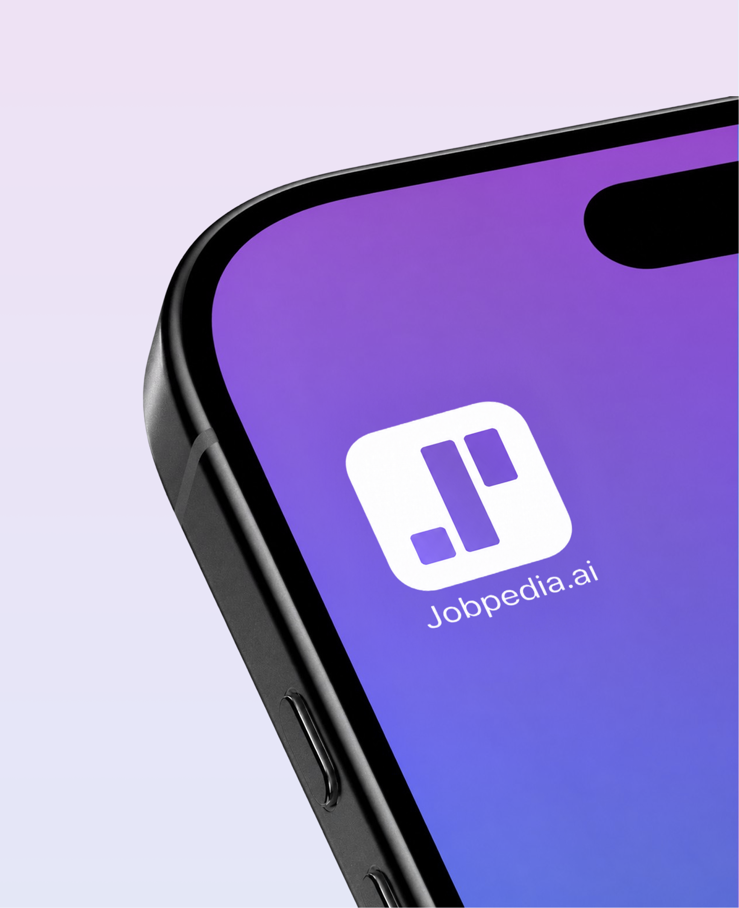
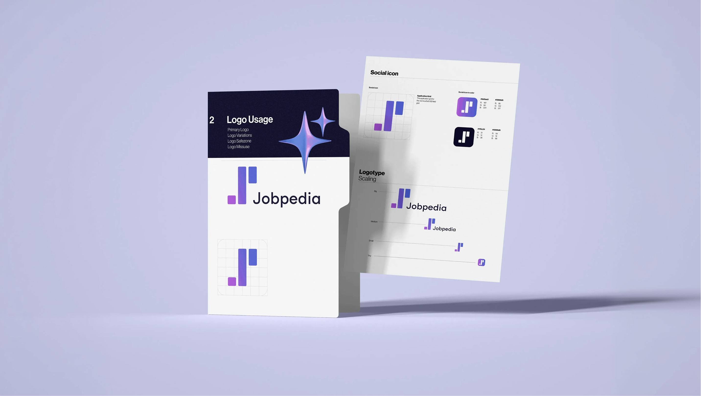
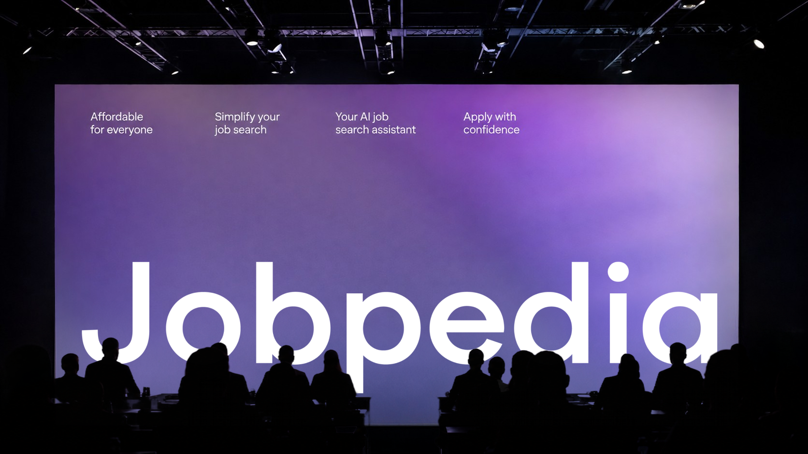
A Clear Identity for a Complex Product
Jobpedia brings job matching, compatibility scores and application tracking into one platform, supported by a browser extension. It helps people compare opportunities and keep their search organised.
My role was to give these connected tools a shared identity. The symbol, wordmark and colour system create a consistent visual starting point for explaining what Jobpedia offers, wherever the brand appears.
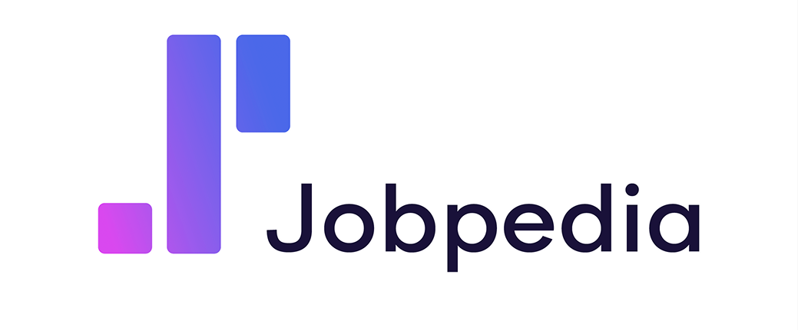
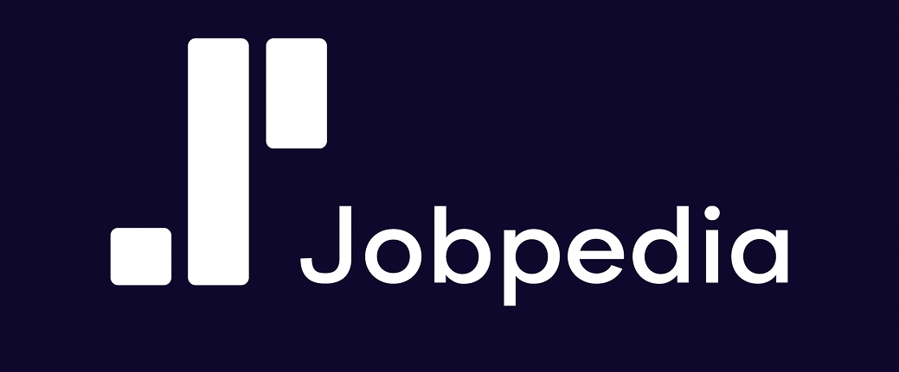
Building a Consistent Visual Language
I translated the direction into brand guidelines covering typography, colour, imagery and visual applications.
The system gives Jobpedia a recognizable identity that can stay consistent as its communication develops across different channels.
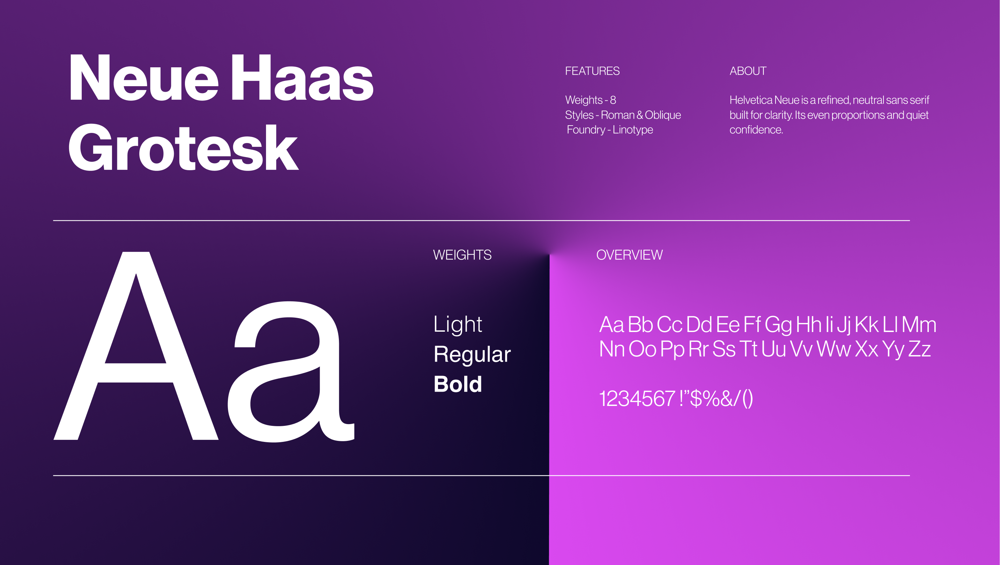
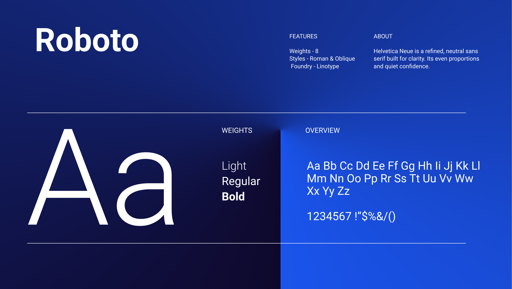
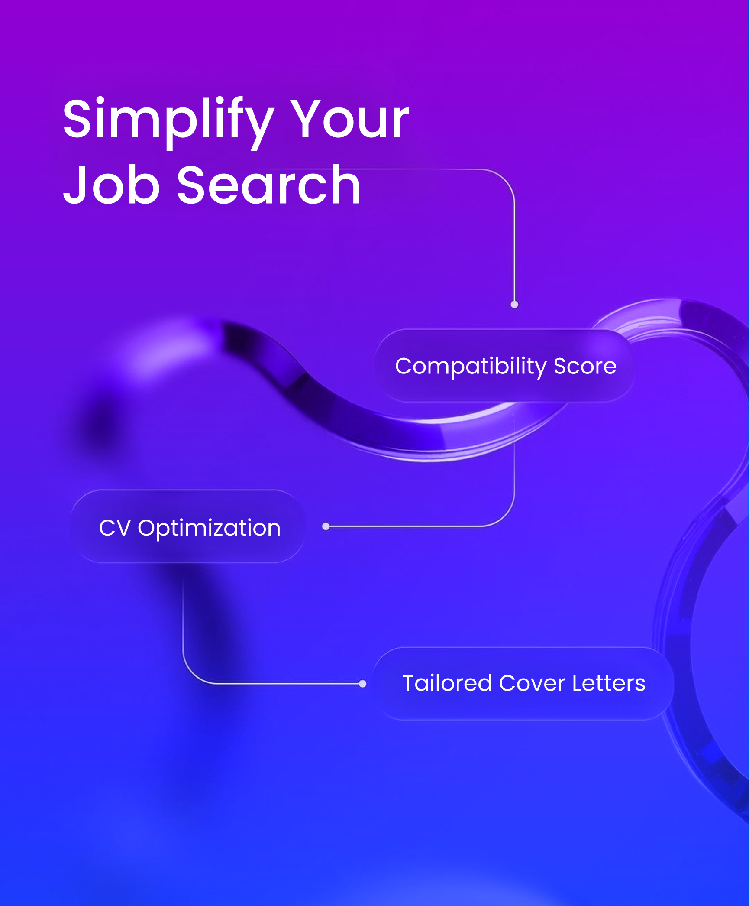
Giving the AI Direction a Visual Form
I built the identity around gradients, translucent forms and a clear typographic hierarchy. These elements make the technology visible and give Jobpedia a distinct character.
A consistent visual language connects different product messages. Each application can focus on one idea while still belonging to the same brand.
Technology With a Clear Purpose
AI can be difficult to explain when the conversation stays focused on algorithms. For Jobpedia, the starting point was what the tools help people do: assess a role, compare options and organise their search.
I paired the digital imagery with direct messages and generous space. The brand could express its AI positioning while keeping the practical benefit easy to find.
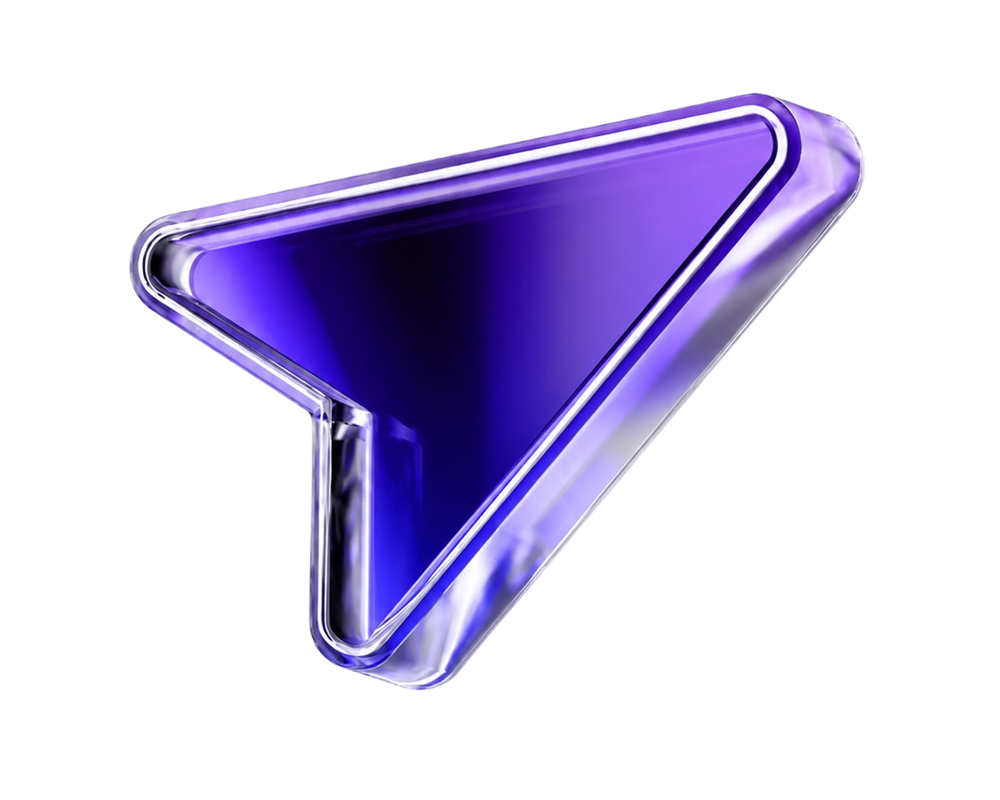
Bringing the Brand Into the Product
I applied the identity to Jobpedia’s website, connecting the visual direction with the product’s digital presence.
The aim was to communicate its AI-focused positioning clearly and keep the platform consistent with the wider brand.
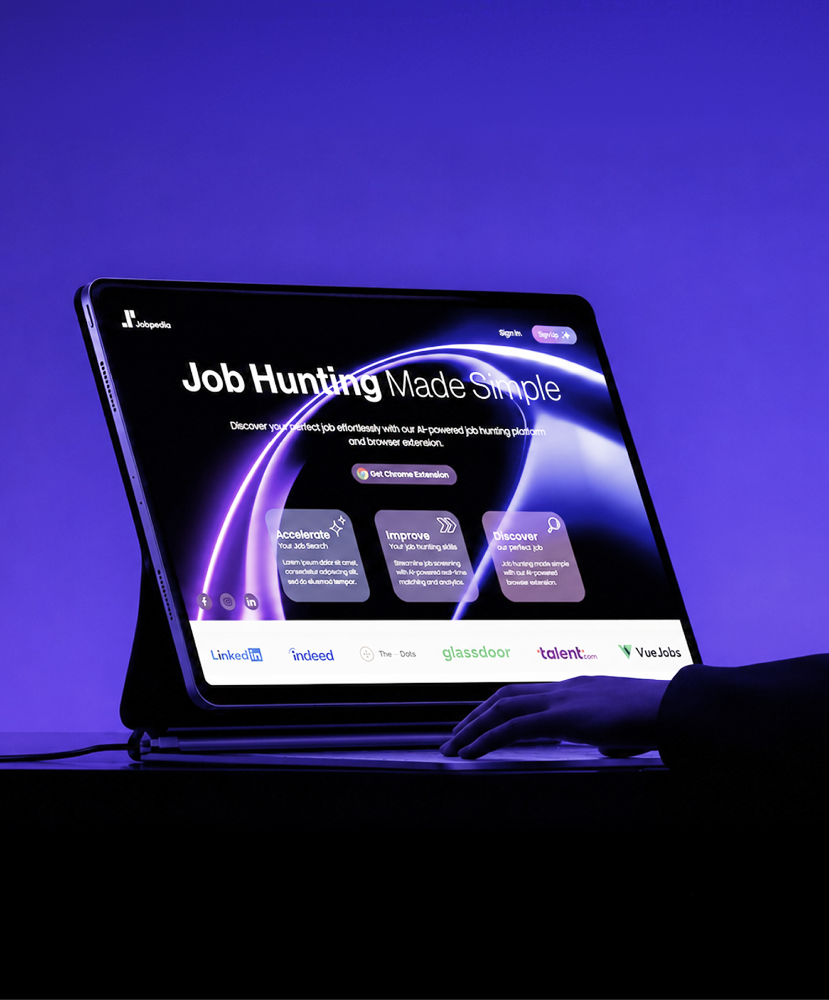
Beyond the Screen
I extended the visual identity into print and outdoor communication in London.
The same gradients, imagery and typography connect these applications to the digital product, establishing a consistent brand presence beyond the screen.
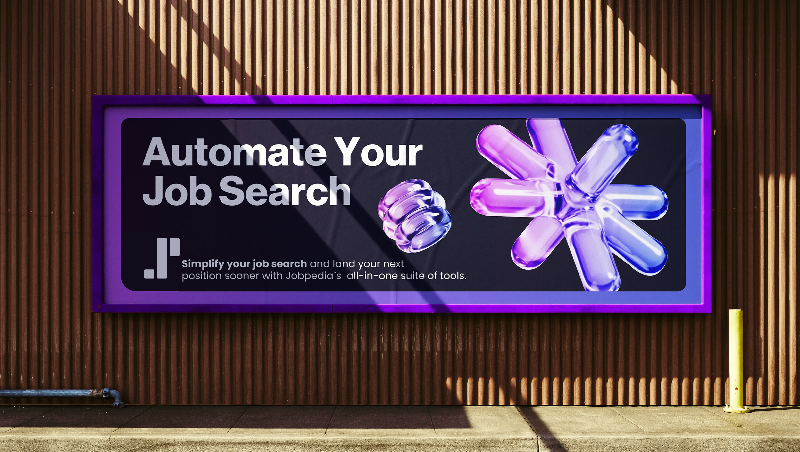
Making the Website Easier to Read
The website brings together matching, tracking and job comparison. I used the brand’s typography, colour and imagery to organise that information into clear sections with a visible order.
Short messages and a consistent hierarchy introduce each feature before asking visitors to explore it. This translates a complex product into a presentation people can scan and understand.
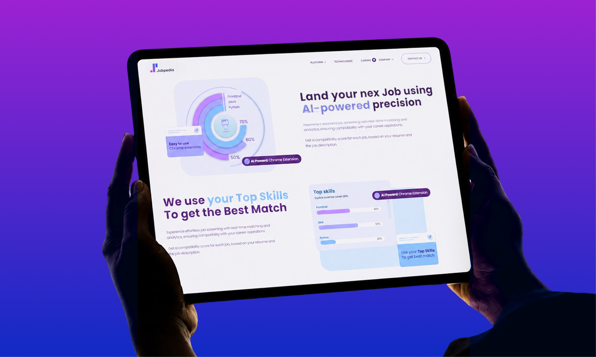
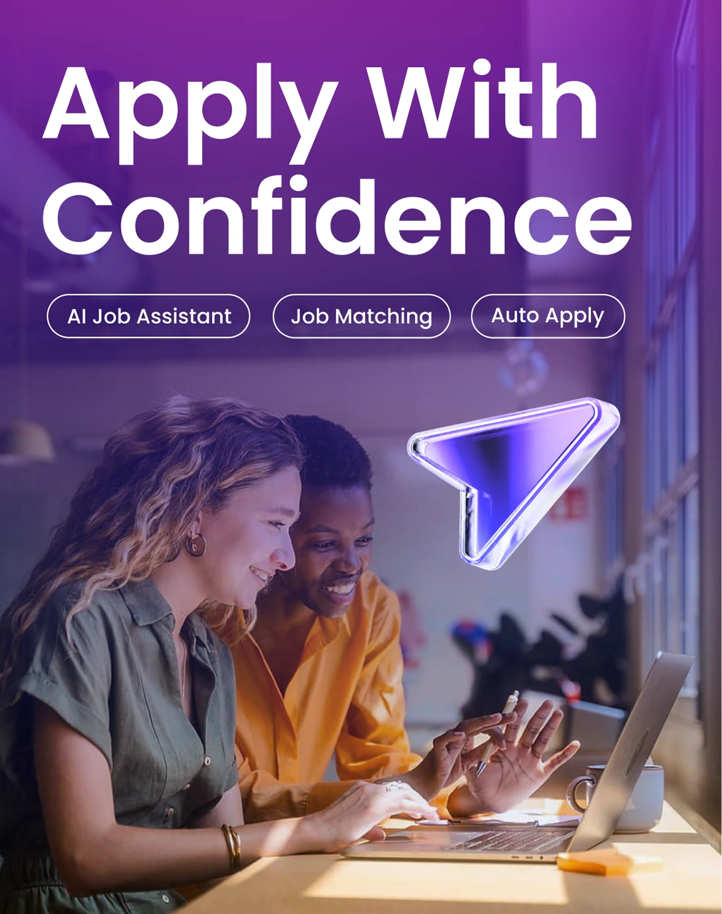
A Focused Message for Advertising
For advertising, I gave one message priority and used the brand imagery to support it. The layout keeps the headline prominent and the product context brief.
The same visual elements can adapt to different campaign messages without losing their connection to Jobpedia’s website and wider identity.
Extending the Brand Into Physical Spaces
Flags and larger collateral call for a different balance of detail. I gave the symbol and wordmark more space so the identity remains clear at a distance.
These applications extend Jobpedia’s presence beyond the product. A shared approach to colour, typography and scale keeps the brand connected across screens, advertising and physical environments.
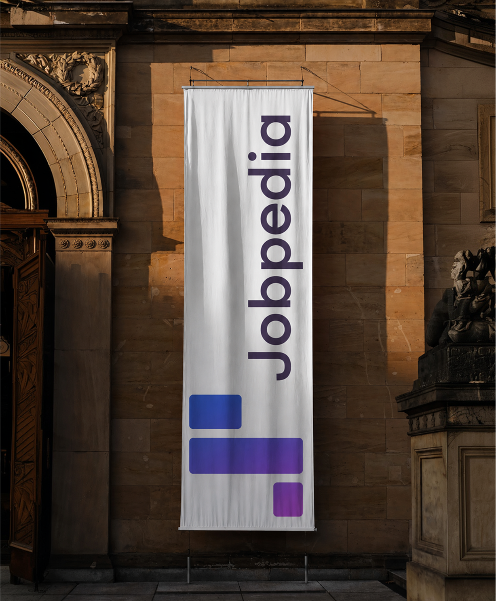
Project Credits
Brand identity, brand direction, brand guidelines and digital communication design by Agneta Camelia Petruta.
Product research by Agneta Camelia Petruta and Stefan Cosmin informed the positioning and visual direction.
Explore the Research ↗